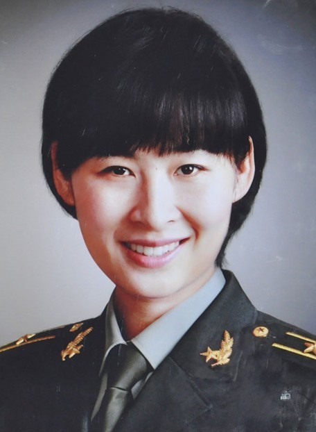

Liuyang
Liu Yang, Han nationality, born in October 1978, Linzhou, Henan, joined the work in August 1997, joined the Communist Party of China in May 2001, graduated from Tsinghua University with a major in sociology, graduate degree, doctorate, and engineer. He is currently the vice chairman of the All-China Women's Federation (and), an astronaut of the People's Liberation Army astronauts.
The current vice chairman of the All-China Women's Federation (and), astronaut of the People's Liberation Army Astronauts.
1Character experience
Born in Zhengzhou, Henan Province on October 6, 1978, he was born in Linzhou City, Anyang City, Henan Province.
From 1985 to 1991, he studied at the Experimental Primary School of Guancheng Huizu District, Zhengzhou City. From 1991 to 1994, he studied at Zhengzhou No. 3 Middle School. From 1994 to 1997, he studied in Zhengzhou 11th Middle School and served as the branch secretary of the class.
She graduated from Zhengzhou No. 11 Middle School in 1997 and joined the army. He was admitted to the Air Force Changchun Flight Academy with a score of 31 points higher than the admission level of the local key colleges in that year. He became a female pilot and the first batch of air force recruited in Henan since the founding of the People's Republic of China. One of the female pilots.
In 2001, he graduated and assigned to a division of Guanghang Aviation, and has been flying for 12 years.In 2010, it stood out from the 15 candidates and officially became the second batch of astronauts in China. It began to accept dozens of subjects in 8 categories, including basic theory, adaptability to space environment, aerospace expertise, flight procedures and mission simulation training. Astronaut training.
In March 2012, according to the final assessment results, Liu Yang was selected as the Shenjiu Group, code 03, and was mainly responsible for the management of space medical experiments.
On June 12, 2012, the media reported that Liu Yang and Wang Yaping from Yantai, Shandong Province became the first popular female astronauts in China.
On the afternoon of June 15, 2012, China’s manned spaceflight engineering headquarters announced that male astronauts Jing Haipeng, Liu Wang and female astronaut Liu Yang will form a flight crew to perform the mission of the Shenzhou and Tiangong No. 1 manned rendezvous and docking. . Liu Yang mainly monitors and supports when performing manual control rendezvous and docking. In addition, Liu Yang also undertakes scientific experiments in the 13-day mission.
On February 1, 2013, Liu Yang was elected as the 2012 Chinese son of the year.
2Character review
When I selected Liu Yang, I went to the interview. I was very impressed by the details. At the time, when we were interviewing their troops, there was a link to test their spoken English. We first interviewed another female pilot. She believes that the competition between comrades and friends is benign, and honesty is the first. (Yang Liwei Review)
Although all three of us belong to a lesser-speaking personality, her eloquence is very good. She often speaks and her knowledge is very profound. Liu Yang is also very modest, and people often get along with each other from life, work, and learning. From such a few points, Liu Yang’s work is very good. (Jing Haipeng Review)
Liu Yang’s impression on her is simple and bold, and Liu Yang’s words are very few. The clothes on the week are very simple. From the outside, it’s very inconspicuous. It’s very serious to do things. In her impression, Liu Yang’s high school has never been three years. Please take a vacation, never be late and leave early, and the discipline is very strong. (Li Fengyun comment）
3Social service
On August 30, 2016, he was elected as the vice chairman of the All-China Women's Federation.